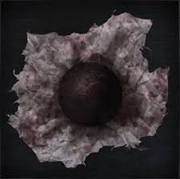
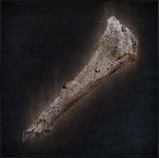
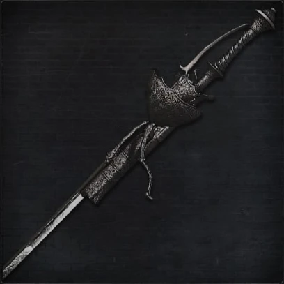
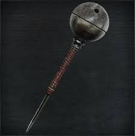

_in_Bloodborne._It_is_part_of_Ashen_Hunter_Set..jpg)


_in_Bloodborne._It_is_part_of_the_Crowfeather_Set..jpg)


_in_Bloodborne._It_is_part_of_the_Black_Church_Set.jpg)


_in_Bloodborne._It_is_part_of_the_Foreign_Set.jpg)
_in_Bloodborne._It_is_part_of_Yahar'Gul_Set..jpg)


_in_Bloodborne._It_is_part_of_the_Choir_Set..jpg)


_in_Bloodborne._It_is_part_of_the_Bone_Ash_Set..jpg)


_in_Bloodborne._%0AIt_is_part_of_Brador's_Set_and_was_added_with_The_Old_Hunters_DLC..jpg)


_in_Bloodborne._It_is_part_of_the_%0AButcher_Set._It_was_added_with_The_Old_Hunters_DLC..jpg)
_in_Bloodborne._It_is_part_of_the_Cainhurst_Set..jpg)


_in_Bloodborne..jpg)


_in_Bloodborne._It_is_part_of_the_Doll_Set..jpg)


_in_Bloodborne._It_was_added_with_The_Old_Hunters_DLC..jpg)


_in_Bloodborne._It_is_part_of_Gehrman's_Hunter_Set..jpg)

_in_Bloodborne._It_is_part_of_the_Executioner_Set..jpg)


_in_Bloodborne._It_is_part_of_Graveguard_Set..jpg)


_in_Bloodborne._It_is_part_of_the_Ashen_Hunter_Set..jpg)


_in_Bloodborne._It_is_part_of_Harrowed_Set_and_was_added_with_The_Old_Hunters_DLC..jpg)


_in_Bloodborne._It_is_part_of_the_Knight's_Set..jpg)


_in_Bloodborne._It_is_part_of_the_Madman_Set..jpg)


_in_Bloodborne..jpg)
_in_Bloodborne..jpg)


_in_Bloodborne._It_is_part_of_Old_Hunter_Set_and_was_added_with_The_%0AOld_Hunters_expansion..jpg)


_in_Bloodborne..jpg)


_in_Bloodborne._It_is_part_of_White_Church_Set..jpg)


_in_Bloodborne._It_is_part_of_the_Yamamura_Set._It_was_was_added_%0Awith_The_Old_Hunters_DLC..jpg)

_in_Bloodborne._It_is_part_of_the_Yharnam_Hunter_Set..jpg)


Keep track of all the items you have and find the items you need!
| Item Name | |
|---|---|
|
Choir Garb |
|
Constable's Garb is part of the Constable Set. |
|
Crowfeather Garb is a part of the Crowfeather Set. |
|
Decorative Old Hunter Garb |
|
Doll Clothes |
|
Executioner Garb |
|
Gasgoigne's Garb is part of Gacoigne's Set. |
|
Graveguard Robe is part of the Graveyard Set. |
|
Harrowed Garb is part of the Harrowed Garb. |
|
Henryk's Hunter Garb is a part of Henryk's Hunter Set. |
|
Hunter Garb is part of the Hunter Set. |
|
Khaki Haori |
|
Knight's Garb is part of the Knight's Set. |
|
Madman Garb is part of the Madman Set. |
|
Maria Hunter Garb is part of the Maria Hunter Set. |
|
Sweaty Clothes are part of the Shabby Set. |
|
Tomb Prospector Garb is part of the Tomb Prospector Set. |
|
White Church Garb |
|
Yahar'gul Black Garb |
|
Yharnam Hunter Garb |
|
A Call Beyond |
|
Accursed Brew |
|
Adeline’s Brain Fluid |
|
Ailing Loran Chalice |
|
Ailing Loran Root Chalice |
|
Amygdalan Arm |
| Anti-Clockwise Metamorphosis Rune | |
|
Antidote |
|
Arcane Haze |
|
Arianna's Shoes |
|
Arianna’s Third Umbilical Cord |
|
Ashen Hunter Garb is a Chest Armor (Attire) in Bloodborne. It is part of Ashen Hunter Set. |
| Ashen Hunter Gloves | |
|
Ashen Hunter Trousers |
|
Astral Clocktower Key |
|
Augur of Ebrietas |
|
Balcony Key |
|
Bastard of Loran |
|
Beak Mask is a Head Armor (Attire) in Bloodborne. It is part of the Crowfeather Set. |
|  | Beast Blood Pellet |
|
Beast Claw |
|
Beast Cutter |
|
Beast Hide Garb is a Chest Armor/Attire in Bloodborne. It is part of Brador's Set and was added with The Old Hunters DLC. |
|
Beast Roar |
| Beast Rune | |
|
Beasthunter Saif |
|
Beast’s Embrace Rune |
|
Beckoning Bell |
|
Black Church Garb is a Chest Armor (Attire) in Bloodborne. It is part of the Black Church Set |
|
Black Church Hat is a Head Armor/Attire in Bloodborne. It is part of the Black Church Set |
|
Black Church Trousers/Dress |
|
Black Hood is a Head Armor (Attire) in Bloodborne. It is part of the Foreign Set |
|
Black Hooded Iron Helm is a Head Armor (Attire) in Bloodborne. It is part of Yahar'Gul Set. |
| Black Messenger Hat | |
|
Blacksky Eye |
|
Blade of mercy |
|
Blindfold Cap is a Head Armor (Attire) in Bloodborne. It is part of the Choir Set. |
|
Blood Dreg |
|
Blood Gem Workshop Tool |
|
Blood Messenger Head Bandage |
|
Blood Rapture Rune |
|
Blood Vial |
|
Blood of Adeline |
|
Blood of Adella |
| Blood of Arianna | |
| Bloodied Arm Bands | |
| Bloodied Trousers | |
|
Bloodletter |
|
Bloodshot Eyeball |
|
Blooming Coldblood Flower |
|
Blue Elixir |
|
Bold Hunter’s Mark |
|
Bolt Paper |
|
Bone Ash Armor is a Chest Armor/Attire in Bloodborne. It is part of the Bone Ash Set. |
|
Bone Ash Leggings |
|
Bone Ash Mask is a Head (Attire) in Bloodborne. It is part of the Bone Ash Set. |
|
Bone Marrow Ash |
|
Boom Hammer |
|
Brador's Testimony is a Head Armor (Attire) in Bloodborne. It is part of Brador's Set and was added with The Old Hunters DLC. |
|
Burial Blade |
| Butcher Garb | |
|
Butcher Gloves |
|
Butcher Mask is a Head Armor (Attire) in Bloodborne. It is part of the Butcher Set. It was added with The Old Hunters DLC. |
| Butcher Trousers | |
|
Cainhurst Armor is a Chest Armor (Attire) in Bloodborne. It is part of the Cainhurst Set. |
| Cainhurst Badge | |
|
Cainhurst Gauntlets |
|
Cainhurst Summons |
|
Celestial Dial |
|
Central Pthumeru Chalice |
|
Central Pthumeru Root Chalice |
|
Charred Hunter |
|
Charred Hunter Garb is a Chest Armor/Attire in Bloodborne. It is part of the Charred Hunter Set. |
| Charred Hunter Trousers | |
|
Chikage |
|
Choir Bell |
|
Choir Gloves |
|
Choir Trousers |
| Church Pike | |
| Clawmark Rune | |
|
Clockwise Metamorphosis Rune |
|
Coldblood |
|
Coldblood Dew |
| Coldblood Flower Bulb | |
|
Coldblood Flowerbud |
|
Communion Rune |
|
Constable Gloves |
|
Constable Trousers |
|
Corruption Rune |
| Cosmic Eye Watcher Badge | |
| Crow Hunter Badge | |
|
Crowfeather Manchettes |
|
Crowfeather Trousers |
|
Crown of Illusions is a Head Armor (Attire) in Bloodborne. |
|
Cursed and Defiled Root Chalice |
| Decorative Old Hunter Trousers | |
|
Defiled Chalice |
|
Doll Hat is a Head Armor (Attire) in Bloodborne. It is part of the Doll Set. |
|
Doll Skirt |
|
Empty Phantasm Shell |
|
Enlarged Head is a Head Armor (Attire) in Bloodborne. It was added with The Old Hunters DLC. |
|
Executioner Gauntlets |
|
Executioner Trousers |
|
Executioner's Gloves |
| Eye Pendant | |
|
Eye Rune |
|
Eye of a blood-drunk Hunter |
|
Fire Paper |
|
First Brain Fluid |
|
Foreign Garb is part of the Foreign Set. |
|
Foreign Trousers |
|
Formless Oedon Rune |
|
Frenzied Coldblood |
|
Gascoigne's Gloves |
|
Gascoigne's Trousers |
|
Gehrman's Hunter Cap is a Head Armor (Attire) in Bloodborne. It is part of Gehrman's Hunter Set. |
|
Gehrman's Hunter Trousers |
|
Gold Ardeo is a Head Armor (Attire) in Bloodborne. It is part of the Executioner Set. |
|
Gold Pendant |
|
Graveguard Kilt |
|
Graveguard Manchettes |
|
Graveguard Mask is a Head Armor (Attire) in Bloodborne. It is part of Graveguard Set. |
|
Great Isz Chalice |
|
Great One Coldblood |
|
Great One’s Wisdom |
|
Great Pthumeru Ihyll Chalice |
|
Grey Wolf Cap is a Head Armor (Attire) in Bloodborne. It is part of the Ashen Hunter Set. |
|
Guidance Rune |
|
Hand Lantern |
|
Harrowed Gloves |
|
Harrowed Hood is a Head Armor (Attire) in Bloodborne. It is part of Harrowed Set and was added with The Old Hunters DLC. |
|
Harrowed Trousers |
|
Heir Rune |
|
Henryk's Hunter Cap is a Head Armor/Attire in Bloodborne. It is part of Henryk's Hunter Set. |
|
Henryk's Hunter Gloves |
|
Henryk's Hunter Trousers |
|
Hintertomb Chalice |
|
Hintertomb Root Chalice |
|
Holy Moonlight Sword |
|
Hunter Axe |
|
Hunter Chief Emblem |
| Hunter Gloves | |
|
Hunter Hat is a Head Armor/Attire in Bloodborne. It is part of the Hunter Set. |
|
Hunter Rune |
| Hunter Trousers | |
|
Hunter’s Mark |
|
Impurity Rune |
|
Inflicted Organ |
|
Iosefka’s Blood Vial |
|
Iron Door Key |
|
Iron Yahar'gul Helm is a Head Armor/Attire in Bloodborne. It is part of Yahar'gul Set. |
|
Isz Root Chalice |
|
Kin Coldblood |
|
Kirkhammer |
|
Knight's Gloves |
|
Knight's Trousers/Dress |
|
Knight's Wig is a Head Armor (Attire) in Bloodborne. It is part of the Knight's Set. |
|
Kos Parasite |
|
Lake Rune |
|
Laurence’s Skull |
|
Lead Elixir |
|
League Staff |
|
Lecture Theatre Key |
|
Living String |
|
Logarius's Wheel |
|
Lower Ailing Loran Chalice |
|
Lower Hintertomb Chalice |
|
Lower Hintertomb Root Chalice |
|
Lower Pthumeru Chalice |
|
Lower Pthumeru Root Chalice |
|
Ludwig's Holy Blade |
|
Lunarium Key |
|
Madara’s Whistle |
|
Madman Hood is a Head Armor (Attire) in Bloodborne. It is part of the Madman Set. |
|
Madman Leggings |
| Madman Manchettes | |
|
Madman’s Knowledge |
|
Maria Hunter Cap is a Head Armor/Attire in Bloodborne. It is part of Maria Hunter Set, and was added with The Old Hunters DLC. |
|
Maria Hunter Gloves |
|
Maria Hunter Trousers |
|
Master's Iron Helm is a Head Armor (Attire) in Bloodborne. |
|
Mensis Cage is a Head Armor (Attire) in Bloodborne. |
|
Mergo’s Third Umbilical Cord |
|
Messenger Head Bandage |
|
Messenger Top Hat |
|
Messenger Urn Festival |
|
Messenger’s Gift |
|
Milkweed Rune |
|
Monocular |
|
Moon Rune |
|
Noble Dress |
|
Notebook |
|
Oedon Tomb Key |
|
Oedon Writhe Rune |
|
Old Great One Coldblood |
| Old Hunter Arm Bands | |
| Old Hunter Badge | |
|
Old Hunter Bell |
|  | Old Hunter Bone |
|
Old Hunter Cap is a Head Armor (Attire) in Bloodborne. It is part of Old Hunter Set and was added with The Old Hunters expansion. |
|
Old Hunter Gloves |
|
Old Hunter Trousers |
|
Orphanage Key |
| Pearl Slug | |
| Powder Keg Hunter Badge | |
|
Pthumeru Chalice |
|
Pthumeru Ihyll Root Chalice |
|
Pthumeru Root Chalice |
|
Queenly Flesh |
|
Radiance Rune |
| Radiant Sword Hunter Badge | |
|
Rakuyo |
|
Red Jelly |
|
Red Jeweled Brooch |
|
Red Messenger Ribbon |
|  | Reiterpallasch |
|
Revered Great One Coldblood* |
|
Rifle Spear |
|
Ring of Betrothal |
|
Ritual Blood |
|
Rune Workshop Tool |
|
Sage's Hair |
|
Sage's Wrist |
| Saw Cleaver | |
| Saw Hunter Badge | |
|
Saw Spear |
|
Sea Rune |
|
Second Brain Fluid |
|
Sedatives |
|
Shining Coins |
|
Short Ritual Root Chalice |
| Silencing Blank | |
|
Simon's Bowblade |
|
Sinister Hintertomb Root Chalice |
|
Sinister Isz Root Chalice |
|
Sinister Lower Loran Chalice |
|
Sinister Lower Pthumeru Root Chalice |
|
Sinister Pthumeru Ihyll Root Chalice |
| Sinister Resonant Bell | |
|
Small Hair Ornament |
| Small Resonant Bell | |
| Spark Hunter Badge | |
| Stake Driver | |
|
Student Trousers |
|
Student Uniform is part of the Student Set. |
|
Sullied Bandage |
|
Surgical Long Gloves is part of both the Black and White Church sets |
| Sword Hunter Badge | |
|
Tear Stone |
|
The Cainhurst Leggings are a legs attire in Bloodborne. |
|
Thick Coldblood |
|
Threaded Cane |
| Tiny Music Box | |
|  | Tiny Tonitrus |
| Tomb Mold | |
| Tomb Prospector Gloves | |
|
Tomb Prospector Hood is a Head Armor/Attire in Bloodborne. It is part of Tomb Prospector Set. |
|
Tomb Prospector Trousers |
|
Tonitrus |
|
Tonsil Stone |
|
Top Hat is a Head Armor (Attire) in Bloodborne. |
| Underground Cell Inner Chamber Key | |
|
Underground Cell Key |
|
Unopened Summons |
|
Upper Cathedral Key |
|
Vermin |
|
Vileblood Register |
| Wheel Hunter Badge | |
| Whirligig Saw | |
|
White Church Hat is a Head Armor (Attire) in Bloodborne. It is part of White Church Set. |
|
White Church Trousers/Dress |
|
White Messenger Ribbon |
| Wine Hakama | |
|
Workshop Haze Extractor |
|
Workshop Third Umbilical Cord |
|
Worn Messenger Top Hat |
|
Yahar'gul Black Gloves |
|
Yahar'gul Black Trousers |
|
Yamamura Hunter Hat is a Head Armor (Attire) in Bloodborne. It is part of the Yamamura Set. It was was added with The Old Hunters DLC. |
|
Yellow Backbone |
|
Yharnam Hunter Cap is a Head Armor (Attire) in Bloodborne. It is part of the Yharnam Hunter Set. |
| Yharnam Hunter Trousers | |
| Yharnam Messenger Hat | |
|
Yharnam Stone |
|
“Iosefka’s” Third Umbilical Cord |